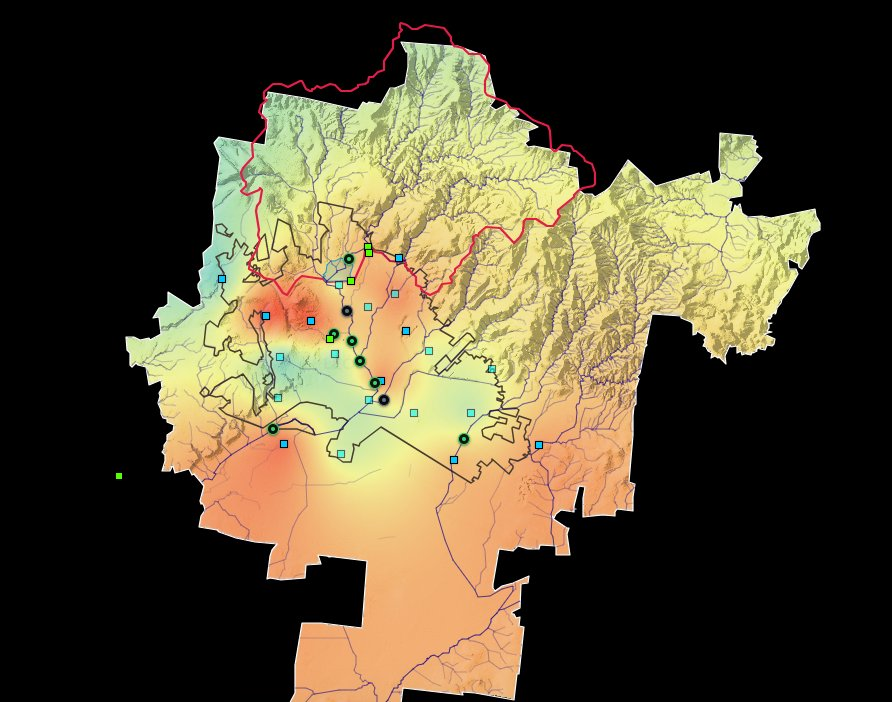
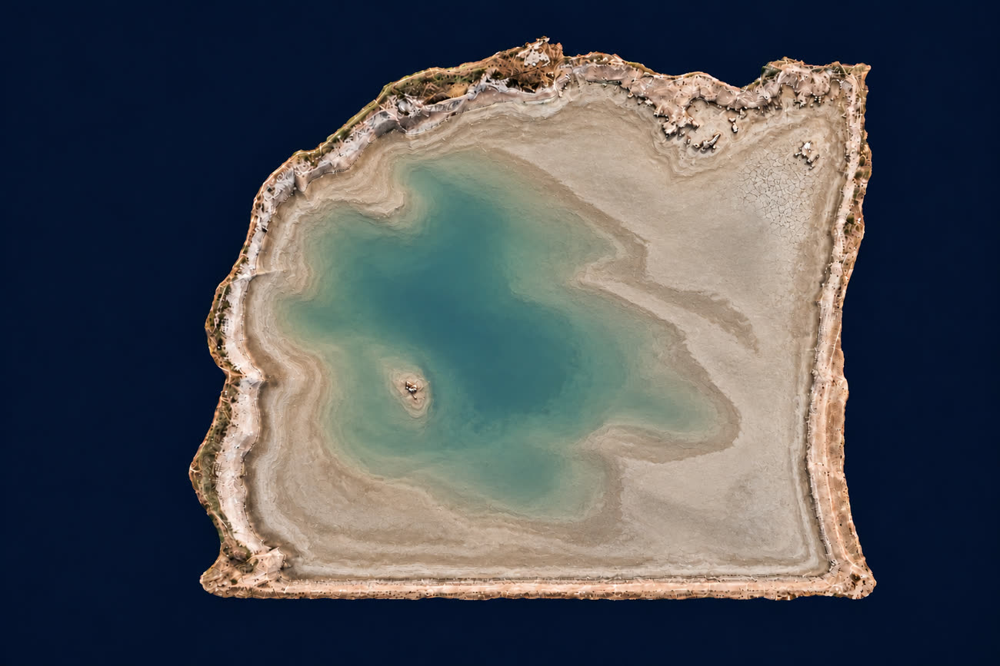
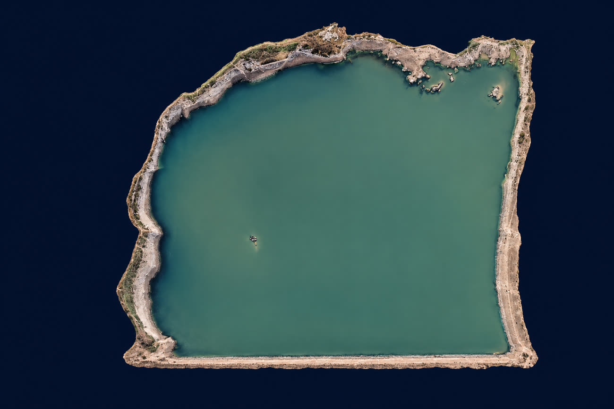

AI benchmarks and evaluation, Earth sciences and water resources engineering: one profile, built from field data up. The timeline below runs from water engineering to AI evaluation.
Hydraulic capacity of a city's urban streams from a 0.5 m LiDAR terrain model: cross-section profiling, erosive and sedimentation velocities, and a traffic-light classification per reach.
One click anywhere in the municipality: curve numbers from Sentinel-2, national soil data, IDF curves from local records, six time-of-concentration formulas and the SCS unit hydrograph, with piped storm drainage modeled as an edit to the flow graph.

Real mapA 2,000-member Monte Carlo ensemble by seasonal block bootstrap, with the elevation-capacity curve as a hard constraint, running entirely in the browser. A frozen forecast kept the observed series inside its P10-P90 band on 92% of 168 days.


A LightGBM hurdle model (occurrence classifier plus amount regressor, 23 features, seasonal isotonic calibration) under leak-free walk-forward validation. A preregistered A/B test raised CSI from 0.303 to 0.316.
Sentinel-2, Landsat 8/9 and Sentinel-1 cloud-optimized GeoTIFFs read straight from STAC catalogs: spectral indices, change detection, surface heat, radar water and k-means, computed client-side in a Web Worker, with a weekly summary produced by GitHub Actions.
40 task packages delivered over two months: time-anchored prompts, golden responses carrying one verifiable ground-truth value per line, grading guidance, and input files with native charts, audited across every artifact before delivery.
Self-contained Python packages: a seeded generator built on canonical physics, an independent reference solution, a second route written without reading the generator, a sealed verifier and a Docker environment. Tolerances are fixed before anything is measured.
A task ships only if it survives blind trials against frontier models: 25 minutes or more, a failure with margin on at least one reasoning link, and shortcut and fabricated-value probes scoring zero. Up to four measured versions before an idea is retired.
Available for remote contract work in AI evaluation for Earth, environmental and water sciences.
Satellite observatory that reads Sentinel-2, Landsat 8/9 and Sentinel-1 straight from STAC catalogs and computes indices, change detection and radar water in the browser. TypeScript and Python, with a weekly summary built by GitHub Actions.
Python · LightGBM · Docker · STAC · Sentinel-1/2 · Landsat 8/9 · WhiteboxTools · QGIS / PyQGIS · LiDAR · SCS unit hydrograph · TypeScript
Carlos M. Ramírez · León, Guanajuato, Mexico